Since Jillian's Frisbee teammates were going to be throwing her a bridal shower, we decided it'd be a good idea to actually register for some gifts. Demonstrating my complete lack of knowledge regarding weddings, I foolishly thought this might take an hour so, while we walked around joyfully scanning items in some large retailer.
First we went to Safeway, to pick up some non-perishable dinner supplies. We did not register here.
Then we went to Bed, Bath and Beyond. We were filled with anticipation at the thought of walking around scanning things that would look good in my (our?) apartment. Imagine my surpise when we were assigned a consultant. She talked with us at length, mostly listened to the story of our engagement, and told us all about how we'd need to register for hundreds of items. She even had us sign up for their free wedding website. We did it, though we already had one, mostly for the reception seating planner. Apparently Jillian wants to think about how people should be arranged, rather than have me write a program to optimally place them based on their relationships to other people.
We only started to get concerned when the consultant walked around with us to each "room" under the guise of helping us move through as quickly as possible. She also did an excellent job trying to upsell everything we considered. But our principle problem is that we don't need much. A new trash can would be nice, but I've been living out of my parent's house for over three years, and completely alone since this summer. I'm having trouble thinking of things that won't end up just sitting in my nonexistent attic. Early on, we found some Kitchen Pals Silicone Pot Holders. I spent the next two hours using one as a puppet to talk to both our "consultant" and Jillian. We registered for about 36 items, some of which we later took off, on account of my refusing to expect anybody to buy me a $70 sauce pan. That's about an item every 4 minutes. Suppose the consultant didn't do a very good job of moving us through there, though she was very kind.
We thought we'd hit up Border's next, mostly because my Aunt and Uncle (Thanks!) gave me a gift card for my birthday. Also, because Jillian wanted to go. But mostly because I had a gift card and the car keys. When I originally received the gift card, it was with instructions to use it to find a book that would help us on our journey. First, I bought Bicycling Magazine's The Complete Book of Long-Distance Cycling to help us deal with the training and pain that we're likely to encounter over the next few months. We also bought Bill Bryson's The Lost Continent: Travels in Small-Town America
, which might be the funniest book I've ever read. Mostly it will serve to help us avoid certain towns. For example, Gettysburg in the 80s, DC in the 60s, and Des Moines, always, are places to steer away from.
After Borders, we hit up Target. This time we decided to walk around and see if there was anything worth registering for. There wasn't. But there was a display of open box appliances. Right in the middle of it was an espresso/coffee maker/milk steamer. Plus, it was only $17! We purchased it immediately, not sure if it would work, but ready for an exciting weekend project.
Then we went to Home Depot, and bought a part for my toilet. It hadn't been flushing right. Toilets are the perfect way to end a day of thinking about a wedding.
When we got home, we had a lot of stuff.
I immediately set about trying to make some quality espresso drink. I thought I'd start with something relatively harmless, like steaming milk. After all, what could go wrong? Well, two things. First, I poured water down the wrong opening in the machine, soaking the insides of it and getting water all over my counter. Second, steamed milk gets very big. I'd say it can double in size, if you're not careful. And if you're really not careful, and unscrew the steamer valve too far, it'll fall off, leaving the milk getting foamier and foamier, and you with no way to put the valve back together without getting milk everywhere.
Fortunately, I needed to clean my kitchen anyway.
Eventually I got that stupid thing working. We promptly unregistered for an espresso maker at Bed, Bath and Beyond.
There will be a lot of gear postings, I'm sure. But for now, this is the only piece of gear we've purchased for the trip. I've been in the market for a digital camera for a while, and after receiving a few Best Buy gift cards for my birthday, I decided it was finally time to get one.
The SD1100IS
is an 8 megapixel camera that will take a SD/SDHC card for additional memory. This is important, when you might need to use that same SD card for additional memory on your laptop. It also has a 3x optical zoom, and will happily shoot movies. To be honest, I don't know much about what any of the other specs mean. But the price was right, and with the the battery, a very small battery charger (important) and standard USB cable, it weighs in around 3/4 pound. Light is good.
Not having anything interesting to take a photo of (how I wish I'd had this thing the last two weddings and hiking trip...), I went out back and shot pictures of the squirrels.
I was really worried about how compatible this camera would be with my Linux laptop, which runs Ubuntu. I became double worried when I opened the camera up the first time and saw maybe six warnings that said to install the software before plugging the camera in. I did run the cd on my Windows desktop. As I expected, it was just a bunch of crap programs that Canon wanted me to install on my machine. I opted out of most of them. I was just worried that the cd might pull updated firmware from the Internet and install it on connection or something. It did nothing of the sort.
When I plugged it into my laptop I was immediately greeted with a little Gnome alert box asking me if I wanted to import these photos into my collection. I said yes. Then I spent some quality time on the terminal with the find command looking for photos added in the last few hours. I found nothing. I also noticed there was no drive mounted in /media, but the camera was found via lsusb. So it was on to Google. After a little bit of searching, I found that many cameras work better with Ubuntu if you use them via gThumb. So a quick apt-get install gthumb and I was on my way.
So now everything seems to work perfect, and I've been very pleased so far. Now I just need to read the manual and figure out what all these settings do.
Edit - 22:12 - Some time this afternoon my Windows computer abruptly decided to stop booting, and simply blue screened even when trying to launch into Safe Mode. After using "Last known good configuration" I figured out why - there was a virus lurking on my PC. The only thing I've installed in the last 24 hours was the software that came with this camera. I can't prove anything conclusively, of course, but I'll work on it. After my computers are clean, I'll virtualize a new Windows XP install and see if I can't get the camera software to install the virus again.
Last weekend was my last wedding of the fall. This wedding, also between two former frisbee players, took place out at Rocky Gap Resort.
This wedding was more then a little bit more traditional then the last one, but that was good. It helped to provide me with a little more insight into what I want at our wedding. Plus more ideas.
Also, western Maryland is beautiful. I'd move there, I think. The hills would promise excellent cycling, and almost remind me of home.
This month seems to be the month for weddings. Jester is back in Frederick hanging out with me while we wait to go to Julia and Kreitzer's wedding on Saturday. But since I had the day off yesterday, we decided to go up to Gettysurg and visit former professors and check out this year's ultimate team.
While seeing former professors was fun, there were two parts of the day that were real highlights. First was playing with the Ferocious Chick Peas, the Gettysburg College women's ultimate team. The current co-captain of the team asked Jester and me to help run practice and give a history lesson while we were there. While we just didn't have enough time to do the history properly, we had a ton of fun practicing with them. Plus, they were even nice enough to take us out to dinner afteward!
We also ran into another friend of ours who currently works in the library. She let us know about the Gettysburg College Book Cart Drill Team. Check them out:
We got to watch them practice, and even tried to help them fix their CD player, but I didn't have my multitool, so we were worthless. But the team did take 3rd place at Nationals, and we did have a lot of fun watching them practice.
Since Dave and Pickle's Wedding wasn't enough excitement for us, afterward Jester and I decided to go hiking.
Jester is from southern California. He's done quite a bit of hiking recently, including Mt Baldy and the 8000m challenge, where he summited 3 mountains totaling 8000 meters of vertical in one day. On the day after the wedding, he kept talking about how our hike couldn't be that hard. After all, we were only going to go 15 miles or so. Shouldn't take much more then 8 hours, right?
Much to Jester's chagrin, I insisted that we hit the trail early - around 5am. We parked at the Giant Mountain parking area on NY-73 at 4:30am, and hiked over to the Ausable Club. The club has some beautiful buildings, and they manage the Adirondack Mountain Reserve (AMR), a large area of private hikeable land.
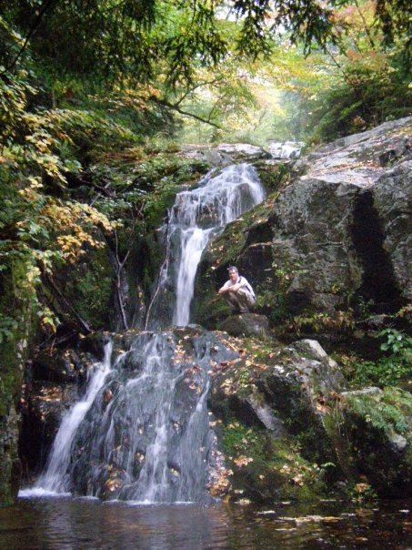
The map we had indicated a short hike down the trail to the right of the tailhead, then a turn left onto a long trail that runs along the river. We figured that this would be easy in the dark with our headlamps and experience. We didn't count on the rather large number of unmarked trails.
While we were never lost, we did spend too much time simply wandering around. We ended up back on the service road that runs to the Ausable Club's private lake. I thought we might follow this road for a while, until we were farther away from the club house and could find an alternate trail that went to the same place (there were a few on the map). But we didn't have any luck. It was simply too dark, and the trails of the AMR are not marked in any way. Jester and I decided that the best course of action was to simply ford the river and find the trail that must be on the other side.
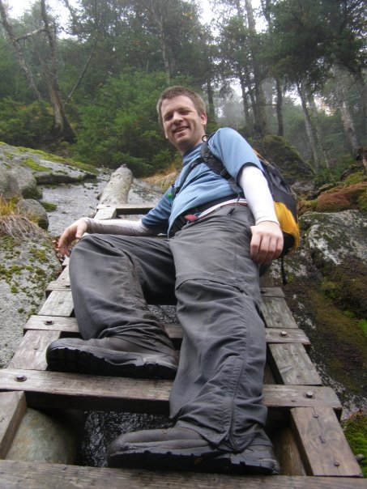
There's a certain natural beauty to a river in the dark. You can't see the stones or the bottom, so you simply see the water on the surface as it rushes over rocks, turning white and reflecting more moonlight. We hopped in. The first few steps weren't so bad. Jester, in his low-top light hikers, was instantly soaked through. My large Gortex boots kept me dry. But then I put my foot down and was suddenly above my knees. The next fifteen feet or so consisted of me up to mid thigh in the water, trying desperately not to slip, desperately grabbing onto any rocks I could find.
But we succeeded, and forded the river. No oxen died. But Jester had the last laugh with the boots. His would start to dry out quickly. My Gortex boots would hold water in them the rest of the day. Turns out waterproof works both ways.
The trail on this side was easy to find, and we made good time. Jester was amazed at the way the trail was built. There weren't really any switchbacks. The trail would simply approach a rock face, which might be fifteen feet high, and you'd just need to find a way to the top. We made it though, doing Lower Wolfjaw, Upper Wolfjaw, and Armstrong, before running into people at the top of Gothics. They were nice enough to take a picture.
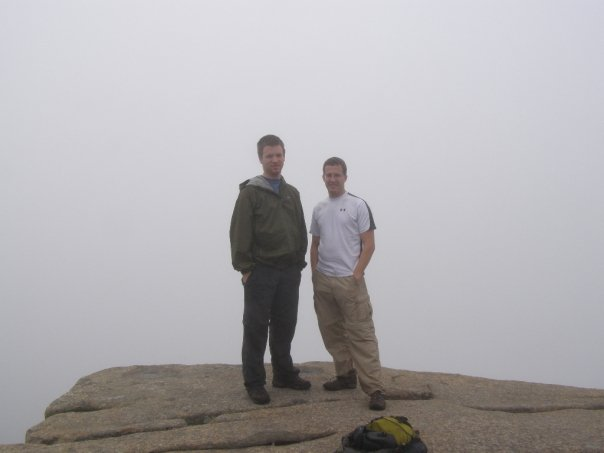
Sadly, all day long we only saw terrible fog. The closest it came to burning off came at the top of our next mountain, on Sawteeth. But even then, visibility was less then a quarter mile. Normally, the views are stunning, and it's possible to see all the way into Vermont.
The trip down the mountain had one of the most impressive sights we saw the entire trip. Tucked away almost at the bottom of the trail is Rainbow Falls, a stop which we only knew to visit because my father and brother had suggested it from one of their previous hikes. While we did have a stunning view from the top of the falls, the brief hike into the bottom was even better. Apparently, when there's sun out, you can even see a rainbow form at the base of the falls, giving these falls their name.
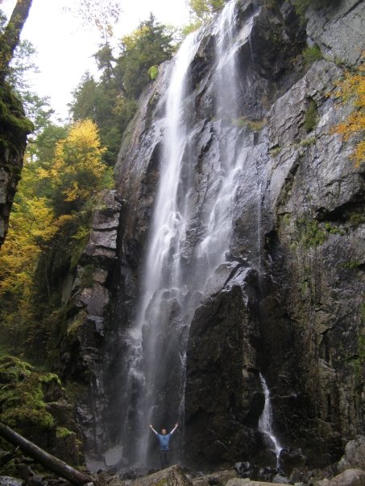
Once we were off the mountain we had a long hike along the AWR service road. It was flat and fast going, but at the same time, monotonous. Those last three or four miles took forever, if only mentally. When we finally returned to the car, it was nearly seven. We'd spent the better part of 14 hours hiking. Jester later admitted that the East definitively had some real hiking.
I'm pretty sure this hike put me past the half way point in my quest to become a 46er. If I lived just a little closer, I might have a shot at catching up with my father and brother.
Recently I drove all the way up to Keene Valley, NY for the wedding of two of my friends, Batman (Dave) and Pickle (Kerry). It was, without any doubt, the wedding that all other weddings this year will need to live up to.
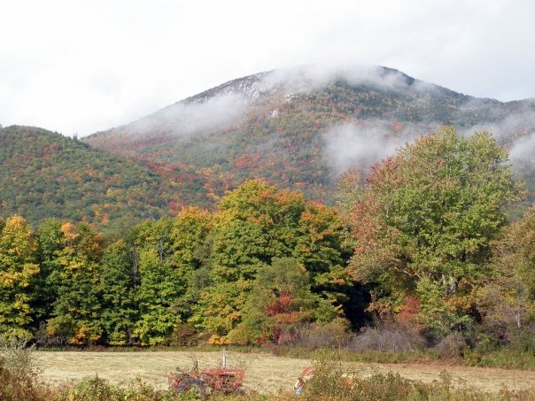
The drive was a bit of a pain. For me, it would be about 10 hours to get there, and the better part of 12 to get back. But fortunately, due to a half day and Rosh Hashanah, I was able to take a 4 day weekend without much trouble. Of course, all of this meant that there was no way Jillian was going to be able to attend. But Keene Valley did offer a beautiful location. The fall foliage was nearly in full bloom, and the rain was yet to hit. The mountains were surrounded in a gentle fog and the temperature was perfect. The wedding took place on Pickle's family's farm, a beautiful old farm house.
When the ceremony started, we all gathered around a few chairs set to the side of the farmhouse. Within a few minutes, we were greeted with the Batman theme. Slowly heads started to turn, and we saw Batman climbing a ladder, in his tux, with a cape.
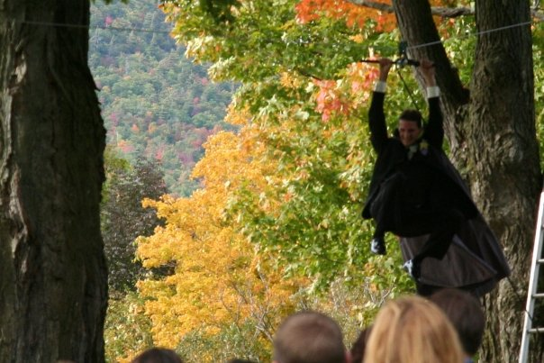
He even had a perfect landing. Pickle entered more traditionally, with her father, to Here Comes the Sun. The rest of the ceremony was short and full of humorous stories.
Afterward, those of us that had played Ultimate Frisbee together gathered in the nearby field and tossed a disc while we waited for the wedding party to finish. There were more then two full lines of former Funksters, so turn out was even better then the average alumni team. There were even a few people I hadn't seen in several years.
By the time photos were over, it was nearly four and high time for the reception to start. After a delicious dinner, Dave put on a kilt (frisbee thing or Scottish thing? We'll never know), and everybody hit the dance floor.
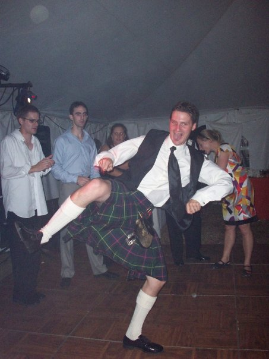
When it was time for the mother-groom dance, the song chosen was very interesting, and yet so perfectly frisbee:
Following the traditional dances, and the toast, where the groom's brother told us all sorts of stories about fighting with his brother as a kid, it was time to cut the cake. The cakes were awesome. One featured a bride on top of a castle, the other had a knight standing next to a dragon. The dragon cake had a smoke machine below it, and a butane torch so that it could breath fire.
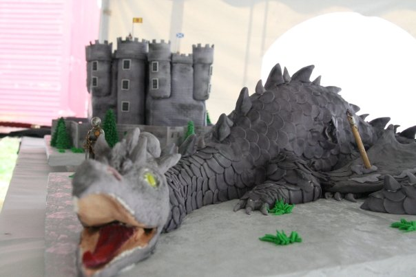
But then, a dragon ran onto the dance floor, to kidnap the bride!
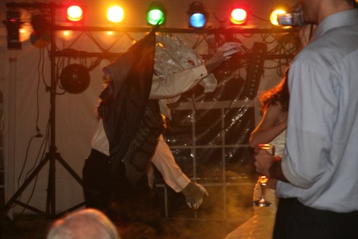
A violent sword fight ensured, with neither Batman the knight nor the dragon able to gain the upper hand. But Pickle had an idea, and kneeled behind the dragon, so that when Batman pushed him back, he tripped over the bride and was vulnerable. Batman and Pickle both jointly swung the sword down as hard as they could and chopped off the head of the dragon cake. Then there were celebrations.
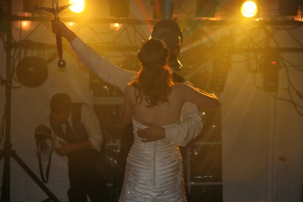
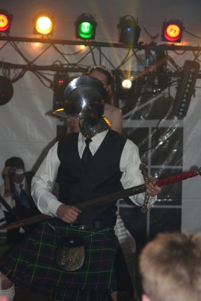
After more dancing, there were fireworks above the field outside.
Things finally wrapped up around midnight, and everyone spent the night somewhere in the farm house. The next morning we got up and had a delightful breakfast. In the dining room of the house there was a nearly 16 foot long complete family tree attached to the wall. Though I missed it, I hear Dave was ceremoniously added.
After a somewhat failed attempt to get a frisbee game going, and many rides by everyone down the zip line, we got our wicked awesome gifts and headed home.
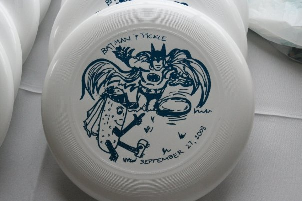
Of course, I didn't head home, and Jester, Emily, Steve and I hung out in Lake Placid for the rest of the day. After Emily and Steve went home, Jester and I spent the night at the Cascade Inn, which I highly recommend. The following day, we did a rather lengthy hike on the Range Trail in the Adirondacks. I'd like to say that it offered stunning views, but the fog was thick, and we were never able to see more then a few hundred yards. Exhausting hike, though.
There were a number of people that said "that was the best wedding I'll ever go to!" only to get hit by me. But yes, definitely going to be challenging to match that.


 | posted at: 18:00 |
permanent link and comments
| posted at: 18:00 |
permanent link and comments